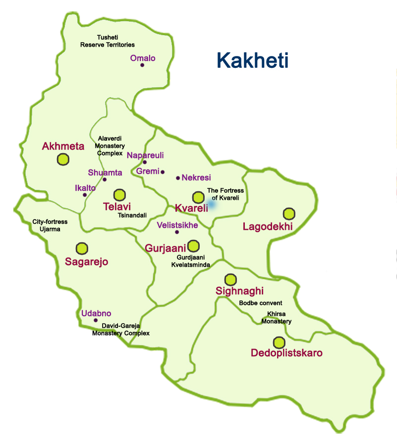

Select dark Mode:OFF

Lagodekhi
- Coordinates 41.8186° N, 46.2781° E
- Website
- Coming any time as you wish
Kvareli
- Coordinates 41.9484° N, 45.8148° E
- Website
- Coming any time as you wish
Akhmeta
- Coordinates 42.0385° N, 45.2068° E
- Website
- Coming any time as you wish
Sagarejo
- Coordinates 41.7254° N, 45.3351° E E
- Website
- Coming any time as you wish
Telavi
- Coordinates 41.9185° N, 45.4777° E
- Website
- Coming any time as you wish
Gurjaani
- Coordinates 41.7439° N, 45.7894° E
- Website
- Coming any time as you wish
Dedoplistskaro
- Coordinates 41.4672° N, 46.1175° E
- Website
- Coming any time as you wish
Sighnaghi
- Coordinates 41.6111° N, 45.9271° E
- Website
- Coming any time as you wish